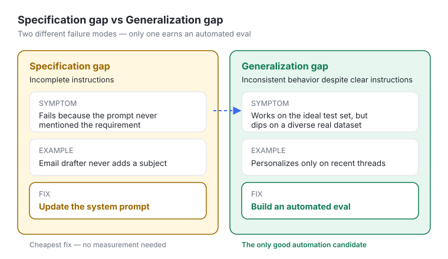
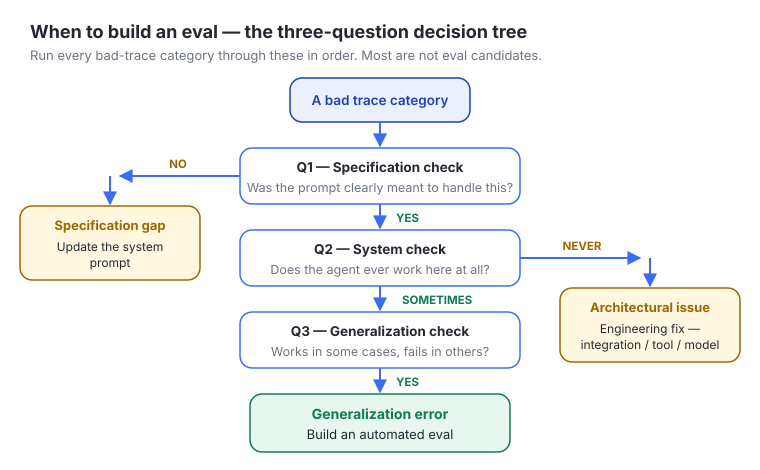
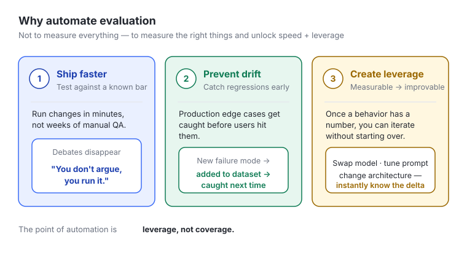
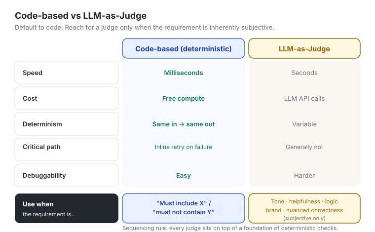
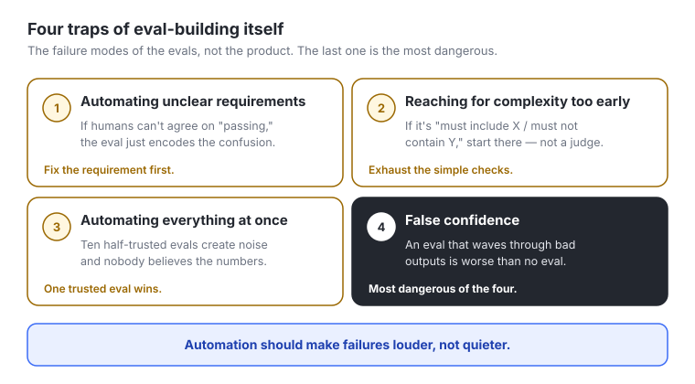
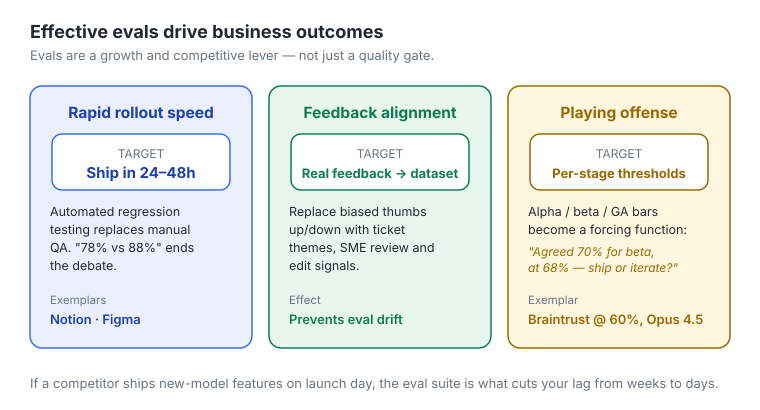
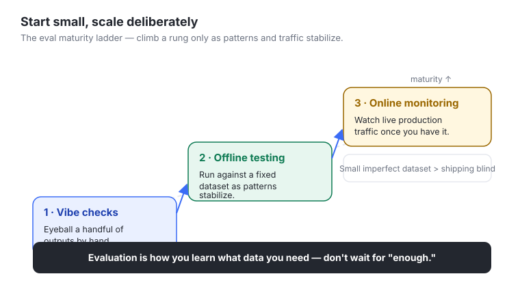

#Chapter 5 — Principles of Automated Evaluation
#In one line
Once manual review can no longer cover production volume, automated evaluation turns your qualitative trace observations into a repeatable, scientific measurement of quality — but only for the right problems, built in the right order (deterministic checks first, LLM judges second), and only when you actually agree on what "passing" means.
#Why it matters for PMs
- This is the module where evals stop being a craft exercise (manually reading traces) and become infrastructure — the thing that lets your team ship fast without flying blind. As a PM you own the decision of what to measure, when it's worth automating, and what bar counts as good. That is product judgment, not engineering work.
- The hard skill here is restraint and triage, not building. Most of the value is knowing which failures should not become evals (they're really prompt bugs or architecture bugs) so engineering effort goes to the few that genuinely need measurement.
- Evals are increasingly a competitive differentiator. The module is explicit: if a competitor ships a new-model feature on launch day and you're still "evaluating" three weeks later, you've lost mindshare. The eval suite is what shortens that lag from weeks to 24–48 hours.
- Evals let you play offense, not just defense. With explicit quality thresholds per stage (alpha/beta/GA) you can ship risky frontier features deliberately — a 55%-success feature can be a power-user opt-in even if it can't be the default.
- Without evals, every launch decision is subjective and contentious. With them, you replace "I think the new prompt is better" with "78% vs 88% task success — ship or iterate?" That is the PM's leverage move: convert opinion into measurement.
#Core concepts
- Manual review ceiling. A human can review ~100 traces/week to spot patterns. You cannot review 100,000+ production traces to verify every output. Automation is the only way past that wall — and it also removes the slow human-QA tax on every release.
- Specification gap — the system fails because the original prompt/instructions were incomplete for that scenario. Fix: update the system prompt. (Not an eval problem.)
- Generalization gap — the system works inconsistently across a diverse real-world dataset despite clear instructions. This is the dip in performance when you go from a small ideal test set to a large diverse one. Fix: build an automated eval. Only generalization errors are good automation candidates.
- Architectural / system gap — the system never works in a scenario even with a clear prompt (missing integration, wrong tool definition, model capability limit). Fix: engineering, not eval.
- Code-based (deterministic) evaluation — explicit, non-subjective rules (a Python function or regex) checking the output. Fast, free, 100% reproducible, never produces a false positive. The default.
- LLM-as-Judge — using an LLM to grade subjective qualities (tone, helpfulness for a user type, logical consistency, persuasiveness, brand alignment, nuanced multi-criteria correctness) of another model's output. Used only when deterministic checks can't express the requirement.
- False confidence — an eval that passes noisy/incorrect outputs is worse than no eval, because it silences failures instead of surfacing them. Automation should make failures louder, not quieter.
- Eval drift — optimizing a metric that no longer reflects real user problems. Tell-tale: offline evals say quality is improving while support tickets are rising. You're measuring the wrong thing.
#The mental model — how to think about this
Think of every "bad trace" you found in Module 4 as a suspect, and you are triaging which suspect deserves the expensive, permanent machinery of an automated eval. Most don't.
The mental shorthand: prompt → architecture → eval, in that order.
- Could a clearer instruction fix it? Then it's a spec gap — just edit the prompt. Cheapest fix.
- Does it never work no matter what? Then it's broken plumbing — engineering fixes it. No amount of measurement helps a disconnected API.
- Does it work sometimes but not reliably? That is the generalization gap — the only failure mode where measurement actually buys you something, because the system already can do it; you need to make the inconsistency visible and improvable.
A second model layered on top: "measurable → improvable." The whole point of automating is leverage. Once a behavior has a number on it, you can swap models, tune prompts, or change architecture and instantly know if you helped or hurt — without re-learning the problem from scratch. An eval is a permanent, reusable instrument; that's why you only build them for things worth instrumenting permanently.
#Key frameworks / steps / loops
Framework A — The Three-Question Decision Tree (per trace category from Module 4)
| # | Question | If the answer points to a problem | Diagnosis | Action | Example |
|---|---|---|---|---|---|
| Q1 | Specification check: Was the prompt clearly supposed to handle this scenario? | NO | Specification gap | Update the system prompt | Email drafter never adds subject lines because the prompt never mentioned them |
| Q2 | System check: If the prompt is clear, does the agent ever work here? | NO (never works) | Architectural issue | Engineering fix (missing integration, bad tool definition, model limit) | Agent should check calendars but the calendar API isn't connected |
| Q3 | Generalization check: Does it work in some cases but fail in others? | YES | Generalization error | Build an automated eval | Email drafter includes personalized context only when prior messages are recent and clearly related; struggles on old messages |
Framework B — Choosing the method (code-based vs LLM-judge) Default to code-based. Reach for an LLM judge only when the requirement is inherently subjective. Sequencing rule: every subjective evaluator sits on top of a foundation of deterministic ones. Exhaust the simple checks first.
| Dimension | Code-based (deterministic) | LLM-as-Judge |
|---|---|---|
| Speed | Milliseconds | Seconds |
| Cost | Free compute | LLM API calls |
| Determinism | Same input → same result | Variable |
| Critical path | Can run inline during a request to auto-retry on failure | Generally not |
| Debuggability | Easy to see why it passed/failed | Harder |
| Use when | "Must include X" / "must not contain Y" | Helpfulness for a user type, logical consistency, persuasiveness, brand alignment, nuanced multi-criteria correctness |
Framework C — The three benefits automated evals deliver
- Ship faster — test changes against a known bar in minutes; debates disappear ("you don't argue, you run it").
- Prevent quality drift — catch regressions from production edge cases before users do.
- Create leverage — measurable becomes improvable; iterate on prompts/models/architecture without starting over.
Framework D — The four common mistakes (anti-patterns)
- Automating unclear requirements — if humans can't agree on "passing," the eval just encodes the confusion.
- Reaching for complex evaluators too early — if it's expressible as "must include X / must not contain Y," start there.
- Automating everything at once — one trusted eval beats ten half-trusted ones.
- False confidence — an eval that waves through bad outputs is worse than none.
Framework E — Effective evaluation drives business outcomes (the offense framework)
| Outcome | Target | How evals enable it |
|---|---|---|
| Rapid rollout speed | Deploy new models / major prompt changes in 24–48h | Automated regression testing replaces manual QA; quantitative comparison ("78% vs 88%") ends debates. Notion, Figma cited as exemplars. |
| Feedback alignment | Real user feedback continuously improves the eval dataset | Replace biased thumbs-up/down with support-ticket themes, output comments, SME review, session-replay edits → fed back into offline dataset to catch the next occurrence; prevents eval drift |
| Playing offense | Ship risky frontier features via explicit per-stage thresholds | Quality thresholds (alpha/beta/GA) become a forcing function: "We agreed 70% for beta. We're at 68%. Ship or iterate?" Braintrust shipped its agentic interface once evals crossed 60% with Opus 4.5. |
Framework F — Maturity ladder (start small, scale deliberately) Vibe checks → offline testing (as patterns stabilize) → online monitoring (once you have real production traffic). "Evaluation is how you learn what data you need" — don't wait for "enough data."
#Visual explainers
(Seven slide images in the source module. Captions are inferred from filenames + adjacent text; the module did not provide alt text.)

ch4-01-spec-vs-generalizat.jpg) — Side-by-side contrast of the two failure modes. Teaching point: a spec gap is incomplete instructions; a generalization gap is inconsistent behavior despite clear instructions. Only the latter earns an eval.
ch4-02-when-to-build-evals.jpg) — The three-question decision tree (spec check → system check → generalization check) routing each trace category to prompt-fix, eng-fix, or eval. Teaching point: most failures are not eval candidates; triage before you build.
ch4-03-why-automate-evalua.jpg) — The three benefits: ship faster, prevent drift, create leverage. Teaching point: automation isn't about measuring everything, it's about measuring the right things to unlock speed and leverage.
ch4-04-code-vs-llm-judge.jpg) — Comparison of the two methods across speed/cost/determinism/critical-path/debuggability. Teaching point: code-based is the default; LLM judge only for subjective criteria, and always layered on top of deterministic checks.
ch4-05-evaluation-traps.jpg) — The common mistakes (unclear requirements, over-complex too early, automate-all-at-once, false confidence). Teaching point: the failure modes of eval-building itself; false confidence is the most dangerous because it hides regressions.
ch4-06-effective-eval-outc.jpg) — The three business outcomes (rapid rollout, feedback alignment, playing offense) with their targets. Teaching point: evals are a growth/competitive lever, not just a quality gate.
ch4-07-start-small-scale.jpg) — The maturity ladder (vibe checks → offline → online monitoring). Teaching point: small imperfect datasets beat waiting; evaluation is how you discover what data you need.#How this connects to: simulation / dataset strategy / synthetic data / actual data
- Dataset strategy — The chapter's "start small" thesis is a dataset philosophy: small, imperfect datasets beat shipping blind. The dataset is a living thing — new failure modes from production get added back as (query, corrected-output) reference pairs.
- Actual (production) data — The whole reason to automate is the 100,000+ real traces you can't hand-review. Production traffic is also the source of regressions ("always finds edge cases your initial dataset missed"). Real-user feedback signals (support tickets, output comments, SME review, session-replay edits) are the high-quality channel — not thumbs-up/down, which is biased toward experience over output quality.
- Synthetic / seed data — When you don't yet have production volume, the user input grid methodology from Module 4 is the prescribed way to create/source initial inputs and get started. (Note: the recap text says "Module 1" while the lesson body says "Module 4" — the grid was introduced earlier in the course; treat it as the seed-input generator.)
- Simulation — Offline testing here is effectively running your agent against a fixed dataset (a simulation of production) to compare changes before they ship; online monitoring is the live counterpart. The ladder moves from cheap simulation (vibe checks/offline) to real-traffic observation.
- The feedback loop — Real data → identify new failure mode → add to offline dataset → offline eval now catches it → fewer production failures. This closed loop is what prevents eval drift.
#Working with ML / eng teams
- Hand off the right problems. Q1 outcomes (spec gaps) are PM/prompt work. Q2 outcomes (architectural gaps) go to engineering — missing integrations, incorrect tool definitions, model-capability limits. Don't ask eng to "build an eval" for something that's actually broken plumbing.
- Code-based evals are an eng-friendly default because they're deterministic, cheap, fast, and can run on the critical path during request processing to auto-retry on failure — i.e., they can be wired into the runtime, not just CI. Frame the ask that way.
- Regression testing on every prompt change. Module 6 (next) is deterministic evals that run automatically on every prompt change and never false-positive — that's a CI/CD conversation with eng. Position evals as part of the deploy pipeline, not a side artifact.
- Define the bar together, in advance. The "70% is beta, we're at 68%, ship or iterate?" pattern only works if PM + eng + design agreed on the threshold before the result came in. Set thresholds per stage (alpha/beta/GA) up front.
- Braintrust is the third-party eval tooling used in the course to demo eval workflows — relevant if your team is choosing eval infrastructure.
#Role of design
- The module is largely engineering/PM-facing, but design shows up in two concrete ways:
- Feedback-signal quality. Thumbs-up/down (a design/UX affordance) is explicitly called out as biased — users react to speed, tone, and UI, not output quality. Design's job is to build feedback surfaces that capture signal about the output (e.g., inline comments on the output, edit-before-accept capture) rather than just satisfaction with the experience.
- Session-replay / edit signals. "Users heavily edit before accepting" is a design-instrumented signal that feeds the eval dataset — design and PM should agree on what interaction telemetry is worth capturing.
- Design also owns whether the experience masks failures (a polished UI that makes a wrong answer feel trustworthy is the experiential version of "false confidence").
#Process to follow
- Start from Module 4 output — your taxonomy of trace codes (what makes output good/bad).
- Run each trace category through the three questions (Q1 spec → Q2 system → Q3 generalization). Route to prompt-fix, eng-fix, or eval accordingly.
- For generalization candidates, confirm the requirement is agreed. If humans can't define "passing," stop — fix the requirement first; don't encode confusion.
- Default to a code-based eval. Ask: can a Python function or regex express this ("must include X" / "must not contain Y")? If yes, build that.
- Escalate to LLM-judge only for genuinely subjective criteria, and only on top of the deterministic foundation.
- Pick one well-chosen eval, not ten. Optimize for the one that most improves velocity or quality.
- Wire it into the loop — regression test on every prompt change; for code-based, consider running it inline to auto-retry.
- Set explicit thresholds per stage (alpha/beta/GA) so launch decisions become forcing functions, not debates.
- Feed production reality back in — convert support-ticket themes, output comments, SME reviews, and edit signals into new dataset entries; cross-check that offline scores track real-world tickets to avoid eval drift.
- Start small and climb the ladder — vibe checks → offline → online monitoring as traffic grows.
#References & sources
- Source module: "Principles of Automated Evaluation — Course Module 5" (Notion meeting note, dated 2026-06-06). Part of an evals-for-PMs course delivered via Reforge / Docebo (SCORM player URLs reference
reforge_docebosaas_com). Four lessons: Intro · When and how to write Automated Evals · Effective Evaluation Practices · Recap and Further Learning. - Course cross-references: Module 4 (trace analysis → trace codes/taxonomy of quality; user input grid methodology). Module 6 (next — deterministic code-based evaluations that run on every prompt change and never false-positive). Module 7 (deeper dive on LLM-as-Judge).
- Tools named: Braintrust — the third-party (3P) eval tool used in the course to demo eval workflows; cited as shipping its own agentic interface once its evals crossed 60% with Opus 4.5.
- Companies cited as exemplars of fast rollout: Notion, Figma (24–48h model/prompt rollout).
- Models referenced: Opus 4.5 (Braintrust threshold example) and Opus 4.6 (the "competitor ships Opus 4.6 features on launch day" example).
- Key terms defined in the module: Specification Gap; Generalization Gap; Code-Based Evaluation (Deterministic); LLM-as-Judge; (implied) eval drift, false confidence.
- Seven slide images (filenames
ch4-01…ch4-07, hosted on the Docebo SCORM CDN) — listed in Visual explainers above. - No external books or articles were cited in this module.
#Skill / template / app ideas
/triage-traceskill — paste a failing trace + the intended prompt; the skill walks the three questions and returns the diagnosis (spec gap / architecture gap / generalization gap) with the recommended action and a one-line justification.- Eval-candidate scoring template — a table that takes each Module 4 trace code and outputs: gap type, eval-worthy? (Y/N), method (code vs judge), proposed pass/fail rule, owner (PM/eng), stage threshold.
/code-or-judgequick-decider — given a requirement statement, classify whether it's deterministic ("must include/exclude") or subjective, and if subjective, list the deterministic pre-checks it should sit on top of.- Eval-drift monitor app — small dashboard correlating offline eval score trend vs support-ticket-theme volume; flags divergence (offline up, tickets up) as suspected drift.
- Feedback-signal converter — pipeline that turns support tickets / output comments / SME notes / heavy-edit sessions into (query, corrected-output) dataset rows for the offline set.
- Threshold-gate template — per-feature alpha/beta/GA quality bars with a "ship or iterate?" decision card auto-filled from the latest eval run.
#Teaching notes (for the instructor)
- Lead with the triage, not the tooling. The single most valuable takeaway for PMs is that most failures are not eval candidates. Spend real time on the three-question tree before any code/judge discussion — otherwise students try to automate everything (mistake #3).
- Use the running email-drafter example throughout — it carries all three gap types cleanly: no subject lines (spec), calendar API not connected (architecture), personalized context only on recent messages (generalization). Same product, three different fixes — that's the "aha."
- Hammer "false confidence." It's counterintuitive that an eval can be worse than no eval. The line "automation should make failures louder, not quieter" is the quotable anchor.
- Make the sequencing rule sticky: "Every subjective evaluator sits on a foundation of deterministic ones." Students over-reach for LLM judges because they feel powerful; the discipline is to exhaust regex/functions first.
- Reframe thumbs-up/down as a trap. PMs love that metric; the module dismantles it (users rate experience, not output). Good discussion prompt: "What feedback surface would actually capture output quality?" — bridges to the design section.
- The 24–48h / "ship or iterate?" framing is the executive-persuasion payload. This is how a PM justifies eval investment to leadership: it's a competitive-speed lever, not a QA cost. Braintrust-at-60% and Notion/Figma are the proof points.
- Flag the source inconsistency: the recap says the user input grid is from "Module 1," the lesson body says "Module 4." Tell students it's a seeding methodology introduced earlier; don't let the number trip them up.
- Bridge to Module 6 at the close: next up is building the deterministic evals themselves — the "never false-positive, runs on every prompt change" promise is the concrete next step.